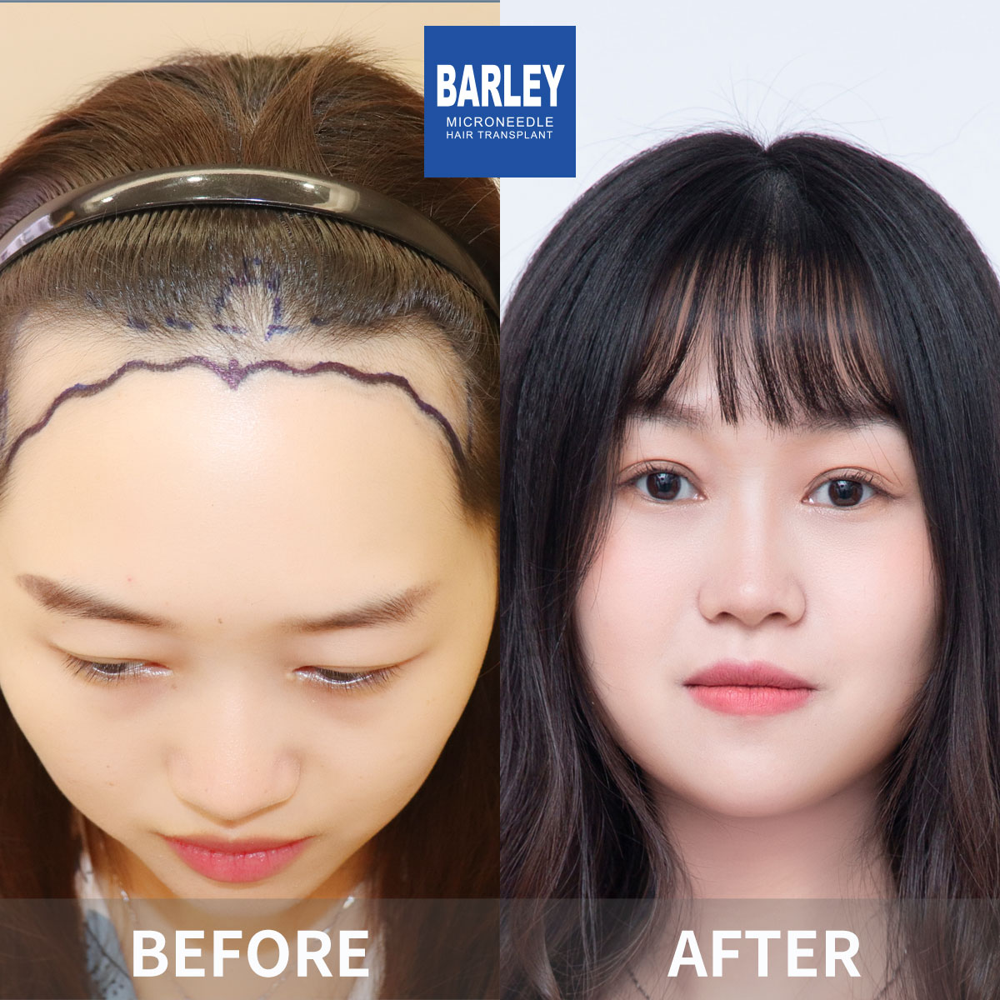
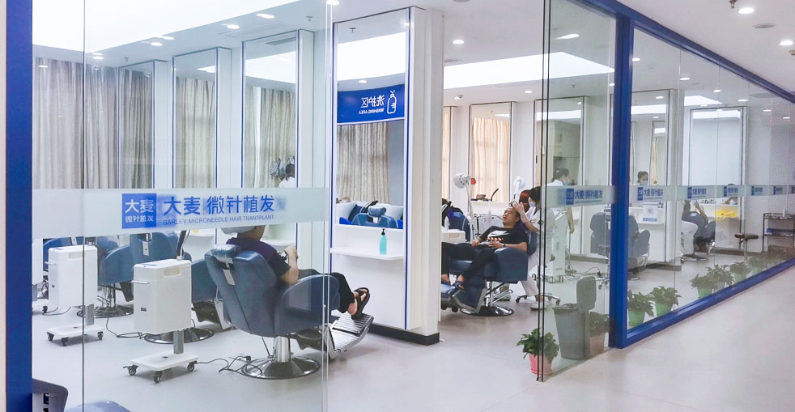
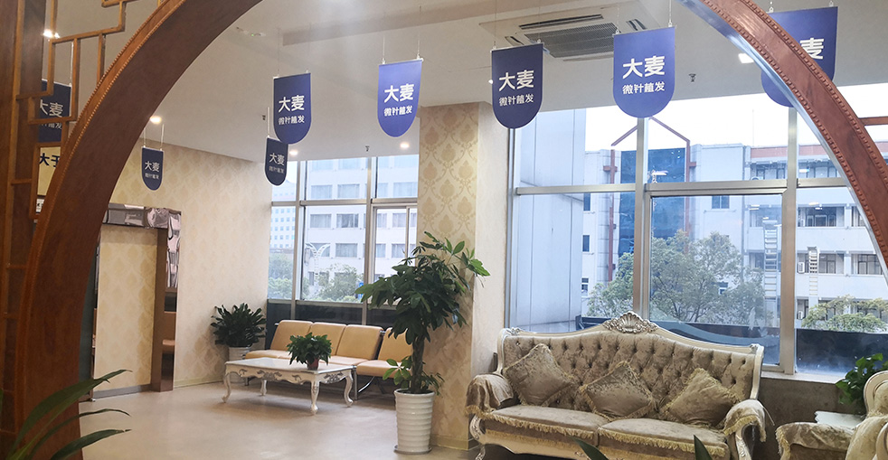

Barley Hair Transplant Hospital stands at the forefront of advanced hair restoration solutions. As the original developers of microneedle transplant technology and no-shave methodologies, we've established new benchmarks for excellence and patient care throughout the industry.
With nearly two decades of expertise, we've emerged as the preferred destination in major metropolitan areas across China, completing more hair restoration procedures than any competing clinic. Our commitment to continuous innovation continues to influence the direction of hair health treatment worldwide.
State-of-the-art clinic facilities
Exclusive technology patents
Years pioneering the industry
Satisfied patients across the globe
Tailored solutions crafted to address your individual hair restoration goals
Specialized hairline creation and transplantation delivering natural, age-appropriate outcomes designed to harmonize with your distinctive facial features.
Increase volume in sparse regions using our precise microneedle implantation method — achieving fuller, thicker-looking hair you'll be thrilled with.
Comprehensive coverage options for crown and vertex balding, featuring naturally distributed density that integrates flawlessly with existing hair.
Beautiful eyebrow reconstruction with careful follicle placement that perfectly mirrors your natural growth patterns.
Design your perfect beard or mustache through artistic follicle positioning created to align with your individual style preferences.
Rebuild or improve sideburns for a defined, masculine facial appearance that commands attention.
Body hair transplantation for the chest and other regions where you desire enhanced definition and coverage.
Comprehensive treatment approaches for all varieties of hair loss conditions and scalp-related concerns.
Expert aftercare and maintenance therapies to preserve and protect your hair health for the long term.
Our revolutionary microneedle implant pen utilizes precision-crafted instruments to position individual hair follicles directly into the scalp with exceptional accuracy. The device's patented 360° rotational capability ensures perfect alignment with your natural hair growth direction, minimizing tissue trauma and discomfort while significantly enhancing follicle survival rates.
Discover why we rank as China's most highly regarded hair restoration provider
Pioneers in microneedle hair transplant technology since our establishment in 2006
Strategically positioned in major Chinese metropolitan areas, all maintaining identical exceptional standards
Cutting-edge microneedle and implant pen innovations producing superior outcomes
Globally trusted for transformative hair restoration results
Complete English support for international patients throughout their entire journey
Advanced facilities and rigorous procedures ensure your safety and comfort at all times
Witness the exceptional hair restoration outcomes our patients have achieved





Genuine moments captured with our pleased, successful patients

Celebrating outstanding outcomes alongside our care team

Patient proudly showcasing their remarkable new hairline

An elated patient recounting their positive experience

Patient commemorating results with our skilled medical professionals

A thankful patient following their successful treatment

An enthusiastic patient presenting their hair restoration results

Patient delighted with their transformation outcomes

A content patient prepared to embark on their new chapter
Authentic accounts from our appreciative patients around the world
"I had been wearing caps everywhere I went for over twelve years. The shame of thinning hair at thirty-two was something nobody prepares you for. From the moment I landed in Beijing, everything felt different — a warm welcome, a comfortable hotel, and a surgeon who actually listened to what I wanted. Seven months later, I threw away every hat I own. My wife says I stand taller now. She's right."
"Let me speak plainly about the numbers. A quote I received in London came in at £9,800 for roughly 2,500 grafts. Barley's all-inclusive package — surgery, five nights in a four-star hotel, airport pickup, all medications, and twelve months of follow-up — totalled under £3,200. Same technology, same graft count, and honestly I think the results here are better. The savings paid for my entire trip with money left over."
"What got me was the human side of it. I was terrified about being alone in a foreign country for surgery. My coordinator Sophie checked in every single day by WhatsApp — not just about my hair, but asking if I was eating well, if I needed anything. The nurses brought me tea during the procedure and played the music I'd requested. These people genuinely cared about me as a person, not just another patient."
"I'm a personal trainer and couldn't afford weeks out of the gym. Barley's microneedle approach had me back to light exercise within four days. The tiny incisions healed so fast that my clients had no idea anything had happened. By week three I was training full throttle again. The speed of recovery with this technique is genuinely unlike anything I've seen in the fitness world."
"My biggest worry was that people would notice — that my hair would look too perfect, too different, too 'done.' Eleven months post-op, nobody in my office has said a word. My barber cut my hair last week and didn't ask a single question. That is exactly the result I wanted. The hairline flows naturally into my temples, the angle is perfect, and it looks like it has always been there."
"I spent eight months researching clinics across Turkey, Mexico, Thailand, and China before choosing Barley. The deciding factor was their combination of 14 proprietary patents, 30+ directly-run clinics, and the fact that they've been doing this since 2006. This is not a fly-by-night operation. The entire journey — from video consultation to my final check-up — felt professional, transparent, and genuinely world-class."
Our straightforward three-step approach makes your hair restoration journey smooth, pleasant, and tailored to your objectives.
Connect with our specialists for a no-obligation evaluation of your hair loss and available treatment alternatives.
We'll detail the optimal approach, clear pricing structure, and a timeline designed specifically for you.
We'll manage your airport or station collection and ensure your complete stay remains comfortable.
Discover our contemporary, comfortable clinical environments

Our advanced medical facility

Relax in our premium waiting area

Sterile, technologically advanced environment

Private, professional atmosphere

Comfortable space for after-procedure rest

Friendly, inviting entrance
Conveniently positioned in major cities across China
Essential information for your hair transplant journey to China
Select any option to copy contact information
15810155700
+86 13730143529
hairtransplant@qq.com